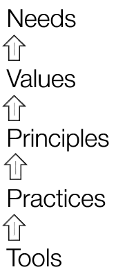

The model is used to map human organisational systems. Once you have mapped a system you can...
Any system that requires humans to do work can be effectively mapped - most commonly this is done at a team level, however the model can be applied to a system boundary as narrow as a single meeting, or as wide as an entire organisation.
This is a concise description of the model. For a more detailed description, read the full story.
Needs > Values > Principles > Practices > Tools.
Needs - Firstly, at a system level, through the eyes of its creators, owners or sponsors, why does this system exist? Secondly, at an individual level, what needs I hope to have met through being a part of this system?
Answers the question: The system exists in order that ______ .
Values - Firstly, at a system level, if you have these things you are most likely to meet the Need. Secondly, at a personal level, these are the things that will keep me in the system.
Answers the question: We optimise the system for ______.
Principles - These are the cause-effect dynamics by which we believe the system behaves, and how we will take advantage of them.
Answers the question: We leverage _____ to maintain or change the system.
Practices - These are the concrete activities we use to get the work done.
Answers the question: We do _____ to create or increase value.
Tools - These are the automations and mechanisations that make the work easier to do.
Answers the question: We use _____ to get the work done more efficiently.
Needs
Values
Principles
Practices
Tools
This has been a concise description of the model. For a more detailed description, read the full story.